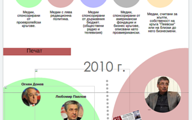
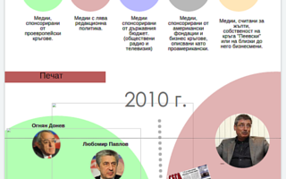

Drive erzählt visuelle Geschichten.
Drive erzählt visuelle Geschichten.
Manchmal es ist gar nicht schwierig die Daten zu erreichen. Zahlreiche Quellen verofentlichen jede Menge Daten Online. Im solchen Fälle, die Hauptsache ist einfach die wichtige von die nicht bedeutende Daten auszusieben.
Das echte Problem erscheint aber, wenn Mann echt interesante Daten zugreifen will. Dann muss Mann sich vorbereiten um sich gegen der Statt selbst zu kämpfen. Das ist genau den Fall, wenn Mann zum beispiel nach ankunft über die Bewegung der Alliierte Kräfte in Afghanistan fragt. Vielleicht ist es kein Zufall, dass ein modernes Sprichwort lautet, dass die Daten das neue Öl sind. Dassheißt, das gute Verständis der großen Datenmengen wird bald ein wichtiges Resource sein.
Von Schokoladenkonsum bis zum Ölkonsum, im jeden Datensatz versteckt sich zumindest eine Geschichte die wartet um erzählt zu werden. Hier sind ein Paar solche Data-stories.
 
